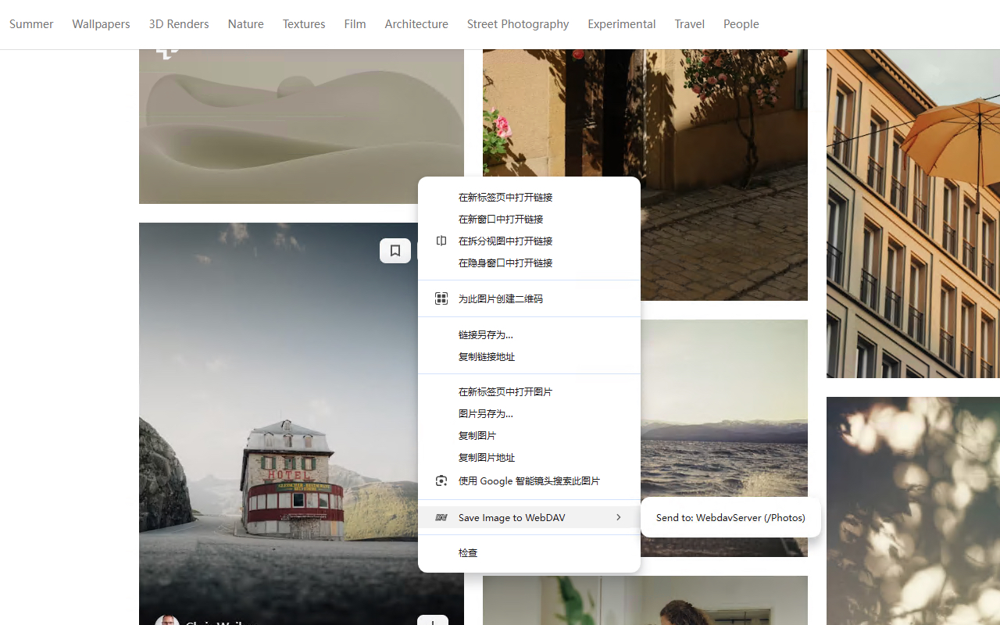
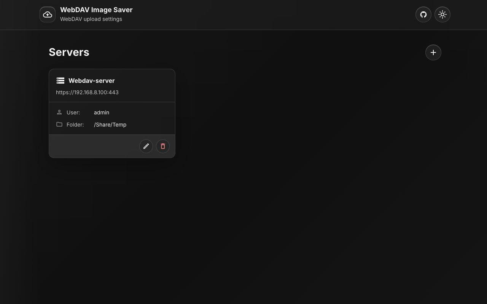

浏览器直传
图片从当前网页直接上传到你配置的 WebDAV，没有第三方网盘，也没有开发者运营的中转服务。
跳过“下载、整理、再上传”。WebDAV Image Saver 让你在 Chrome 里，把网页图片直接送到 Nextcloud、群晖、QNAP 或任何 WebDAV 目录。
开源 · 免费 · 无分析追踪

把重复操作折叠成一次右键，同时保留你对文件、目录与服务器的完整控制。
图片从当前网页直接上传到你配置的 WebDAV，没有第三方网盘，也没有开发者运营的中转服务。
为工作、灵感与归档配置不同服务器和目录，保存时直接选择。
上传前显示倒计时气泡；点错目标，也能立即取消。
填写 WebDAV 地址、用户名与密码，先测试连接。
浏览服务器目录，为这个目标指定保存文件夹。
在任意网页图片上右键，选择目标，完成。

统一管理已经配置的 WebDAV 服务器与目标目录。
WebDAV Image Saver 没有开发者运营的服务器、托管 API 或分析系统。配置保存在 Chrome 本地扩展存储中，图片由浏览器直接上传到你的服务器。
查看隐私政策